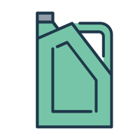

📹
图传电台
状态持续时间
00:00:00
🛰️
北斗设备
状态持续时间
00:00:00
🔊
声通设备
状态持续时间
00:00:00
🌊
DVL多普勒
断开连接
扫描深度
0米
📡
多波束测深
断开连接
覆盖宽度
0米
扫描深度
0米
抛载状态:
未抛载
抛载时间:
-
高度:
0 米
惯导状态:
-
速度仪表
0
米/秒
航向仪表
0°
真北方向
信号强度
0%
经度:
0
纬度:
0
更新时间:
--:--:--
状态机:
idle
设备电源控制
推进系统控制
舵机控制
推进器控制
0%
无刷电机控制
0°
路径规划
序号
坐标 (经度, 纬度)
深度 (米)
速度
phi
模式
准备绘制路径
已生成 0 个测绘点
序号
坐标 (经度, 纬度)
深度 (米)
速度
phi
模式
准备进行区域测绘
📁
点击或拖拽XML文件到此处上传
支持标准路径规划XML格式
未选择文件
添加滑行任务点
米
°
mL
mL
滑行任务点列表
序号
期望深度 (米)
期望首向 (°)
前油囊 (mL)
后油囊 (mL)
操作
1
50
120
1500
1800
2
75
180
2000
2200
暂无滑行任务点，请添加任务点
已添加 2 个滑行任务点
范围限制
状态组合配置
状态组合1
状态组合2
返回参数
-300~300米
-300~300米
-300~300米
PC控制配置
授权位置配置
0-255分钟
安全配置就绪
删除此路径点
在前面插入点
在后面插入点
系统自检
外接设备
CTD设备
DVL多普勒
动力设备
舵机系统
推进器
通讯设备
北斗设备
声通设备
图传设备
自检进度
自检反馈
点击"开始自检"按钮启动系统自检...
设备管理
🤖
AUV 1
运行中
🤖
AUV 2
离线
🤖
AUV 3
离线
⛵
Sailboat-01
离线
⛵
Sailboat-02
离线
启动设备
停止设备
重启设备
AUV-01
北斗设备数据
北斗数据解析
接收时间:
--:--:--
北斗设备ID:
未知
位置X:
0
位置Y:
0
错误代码:
0
当前状态:
0
深度:
0米
高度:
0米
电池电量:
0%
经度:
0.000000
纬度:
0.000000
原始数据
等待数据...
声通设备数据解析
原始数据
解析结果

油量状态
前油囊
75%
2500mL
后油囊
60%
2500mL
外油囊
90%
5000mL
脉冲
脉冲
mm
mm
这是一条消息提醒